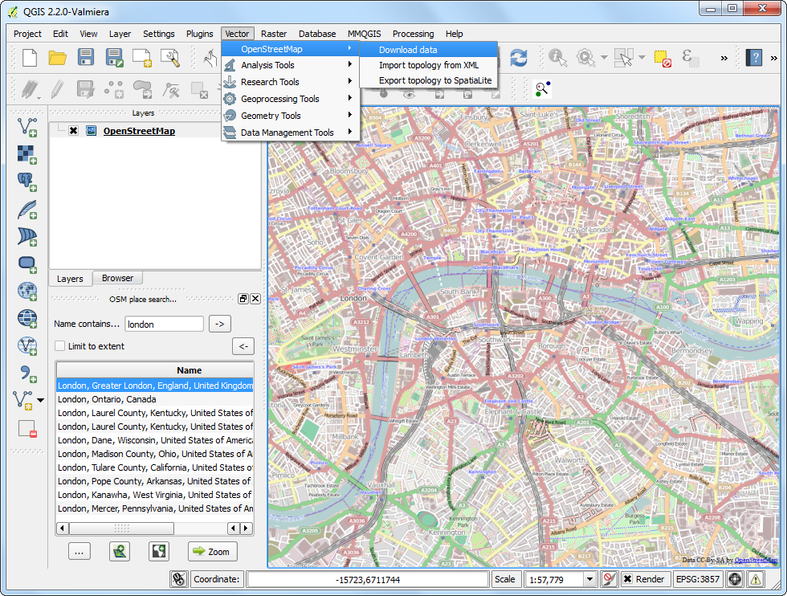

Primi passi con la programmazione Python
[ Download PDF A4 Letter ]
QGIS fornisce una potente interfaccia di programmazione che vi permette di estendere le funzionalità di base del software e di scrivere codice per automatizzare i vostri lavori. QGIS supporta il celebre linguaggio di scripting Python. Anche se siete dei principianti, imparare un po’ di Python e di programmazione delle interfacce QGIS, vi permetterà di essere molto più produttivi nel vostro lavoro. Questa esercitazione non presume competenze pregresse nella programmazione e si propone di offrire un’introduzione allo scripting python in QGIS (PyQGIS).
Descrizione del compito
Caricheremo un vettore puntuale che contiene tutti i principali areoporti e useremo lo scripting in python per creare un file di testo con il nome dell’areoporto, il codice dell’aeroporto, la latitudine e la longitudine di ciascuno degli aeroporti presenti nel layer.
Procedimento
Aprite QGIS andate su . Individuate il file scaricato ne_10m_airports.zip e fate click su Apri. Selezionate il layer ne_10m_airports.shp e fate click su OK.

Ora vedrete il layer ne_10m_airports caricato in QGIS.

Selezionate lo strumento Identifica elemento e fate click su uno dei punti per esaminare gli attributi che abbiamo a disposizione. Vedrete che il nome dell’aeroporto e il suo codice di 3 lettere sono contenuti, rispettivamente, negli attributi name e iata_code.

QGIS fornisce una console residente dove potete scrivere comandi in Python e verificare il risultato. Questa console è una strada privilegiata per apprendere a scrivere gli script e per effettuare delle rapide elaborazioni di dati.
Apriamo la Python Console andando su .

Vedrete comparire un nuovo pannello che si aprirà alla base della finestra principale di QGIS. Noterete un prompt fatto così >>> alla base del pannello, dove si digitano i comandi. Per interagire con l’ambiente QGIS dobbiamo usare la variabile iface. Per avere accesso al layer attualmente attivo in QGIS, dovete digitare la riga di codice che segue e quindi premere il tasto Enter. Questo comando porta il controllo sul layer corrente e lo memorizza nella varabile ``layer`.
layer = iface.activeLayer()

Esiste in Python una comoda funzione chiamata dir() che vi mostra tutti i metodi a disposizione per ciascun oggetto. Questo è utile quando non avete chiaro quali funzioni sono a disposizione per un dato oggetto. Lanciate il comando che segue per vedere quali operazioni possiamo fare sulla variabile layer .

Vedrete una lunga lista di funzioni disponibili. Per ora, useremo una funzione chiamata getFeatures() che vi darà il controllo su tutte le geometrie del layer. Nel nostro caso, ciscun elemento sarà un punto che rappresenta un areoporto. Potete digitare il comando che segue per realizzare un’iterazione di ciascuna delle geometrie presenti nel layer corrente. Assicuratevi di aver battuto 2 spazi prima di digitare la seconda linea di codice.
for f in layer.getFeatures():
print f

Come potete vedere nell’output, ciascuna linea contiene un riferimento ad una geometria presente all’interno del layer. Il riferimento all’elemento è contenuto nella variabile f. Possiamo quindi usare la variabile f per accedere agli attributi di ciascun elemento. Digitate il comando seguente per stampare il name e lo iata_code per ciascuna geometria rappresentata da un areoporto.
for f in layer.getFeatures():
print f['name'], f['iata_code']

Così, adesso sapete come accedere agli attributi di ciascuna geometria di un layer. Adesso vediamo come possiamo accedere alle coordinate della geometria. Le coordinate di un elemento vettoriale possono essere ottenute con una chiamata alla funzione geometry() . Questa funzione restituisce un oggetto geometrico che noi possiamo depositare nella variabile geom. Potete lanciare la funzione asPoint() per quegli oggetti che restituiscono le coordinate X e Y di un punto. Nel caso in cui la geometria fosse una linea o un poligono, dovreste usare, rispettivamente, le funzioni asPolyline() e asPolygon(). Scrivete il codice seguente al prompt e premete Enter per vedere le coordinate X e Y di ciascun elemento.
for f in layer.getFeatures():
geom = f.geometry()
print geom.asPoint()

Che fare nel caso in cui desiderassimo conoscere la sola coordinata x del punto?
Possiamo chiamare la funzione x() sull’oggetto punto e ottenere la sua coordinata X.
for f in layer.getFeatures():
geom = f.geometry()
print geom.asPoint().x()

Adesso abbiamo tutti gli elementi che occorre cucire insieme per produrre l’output desiderato. Digitate il codice seguente per stampare il nome, lo iata_code la latitudine e la longitudine di ciascuna delle geometrie areoporto presenti in questo layer. I simboli %s e %f sono metodi per formattare variabili stringa e variabili numeriche.
for f in layer.getFeatures():
geom = f.geometry()
print '%s, %s, %f, %f' % (f['name'], f['iata_code'],
geom.asPoint().y(), geom.asPoint().x())

Adesso potete osservare l’output stampato sulla console. Un metodo più comodo di immagazzinare questi dati potrebbe essere quello di scriverli in un file. Eseguite il codice che segue per creare un file e scrivere su di esso il nostro output. Ovviamente, dovrete sostituire il percorso per raggiungere il file con un path presente sui vostri sistemi di memoria di massa – disco fisso, pendrive etc. Come vedete aggiungiamo \n alla fine di ogni linea che formattiamo. Questo si fa per andare a capo e aggiungere una linea dopo che sono stati inseriti i dati relativi a ciascun elemento. Dovreste notare anche la linea unicode_line = line.encode('utf-8'). Siccome alcune geometrie del nostro layer contengono caratteri unicode, non possiamo semplicemente scriverli in un file di testo. Dobbiamo codificare il testo usando la codifica UTF-8 e solo dopo scrivere sul file di testo.
output_file = open('c:/Users/Ujaval/Desktop/airports.txt', 'w')
for f in layer.getFeatures():
geom = f.geometry()
line = '%s, %s, %f, %f\n' % (f['name'], f['iata_code'],
geom.asPoint().y(), geom.asPoint().x())
unicode_line = line.encode('utf-8')
output_file.write(unicode_line)
output_file.close()

Ora potete andare sul file di output nella cartella che avete specificato e aprire finalmente il file di testo. Vedrete i dati provenienti dallo shapefile degli aeroporti, cioè quelli che abbiamo potuto estrarre grazie all’uso dello scrpting python.